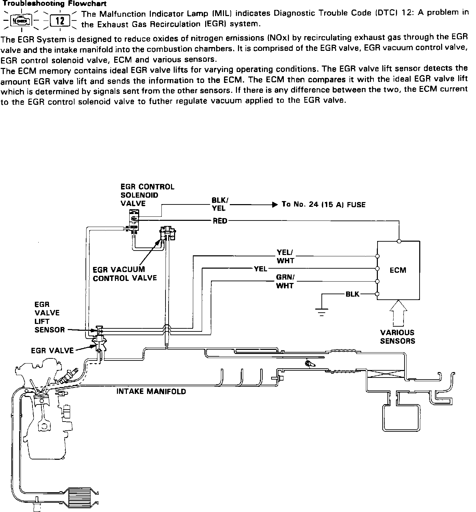

Exhaust Gas Recirculation: Description and Operation
Schematic View Exhaust Gas Recirculation System:

PURPOSE
Exhaust Gas Recirculation (EGR) reduces oxides of nitrogen emissions in the vehicle exhaust. The EGR system uses partial recirculation of exhaust gases from a port in the cylinder head to a port in the intake manifold to lower combustion chamber temperature.
OPERATION
When the Engine Control Module (ECM) determines conditions are suitable for EGR operation it connects the ground supply to the solenoid. This allows the solenoid to connect the inlet and outlet ports, allowing ported manifold vacuum to be applied to the EGR valve diaphragm.
The EGR system is also equipped with a lift-sensor. It sends a signal to the ECM of how far the EGR valve is open. With information from the lift-sensor, the ECM controls the amount of exhaust gas entering the combustion chamber, by varying the voltage to the EGR Control Solenoid valve.